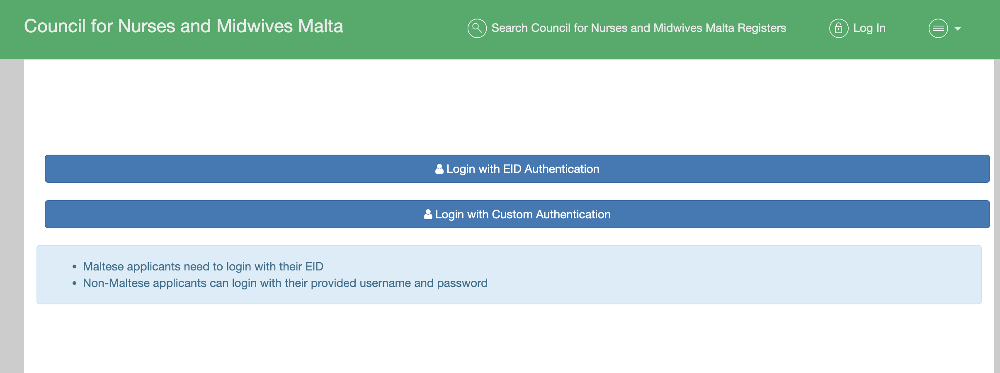

How Polish Nursing Graduates Can Register to Practice in Malta

Graduating from a nursing program in Poland is a huge milestone. But for many international graduates, the next challenge is figuring out where to begin their career. While some stay in Poland, others look for opportunities abroad. Malta is a strong option, especially because English is an official language and the Malta Council for Nurses and Midwives (MCNM) offers a clear route for recognition.
This guide explains the process from the perspective of a Polish-trained graduate.
Step 1: Registration Category
If you are a non-EU citizen trained in Poland, you must apply under 1st Level Nurse – Temporary Registration with MCNM. This registration is valid for 24 months and can be renewed.
Step 2: Documents Required
To apply, you will need to prepare and (if necessary) translate the following documents into English. Because some documents (like the Brown Certificate and diploma) take time to issue, it is smart to begin early.
- Polish nursing degree certificate
- OIPiP “Brown Certificate” confirming your qualification meets EU standards
- Transcript and diploma supplement
- Passport copy
- IELTS Academic certificate (minimum overall 6.5, no band below 6.0)
- Police Clearance Certificate (from Poland)
- MQRIC certificate
- Passport-size photo
- Europass CV
- Proof of payment (€192.50 application fee)
Step 3: Submitting the Application
Applications are submitted online through the MCNM portal: nursesandmidwivesregistration.gov.mt
- Sign up with Custom Authentication.
- Fill in personal details and upload a passport photo.
- Enter contact information and confirm by email.
- Start a new application and select Nurse – 1st Level Nurse.
- Add university and certificate details. If your school is not listed, check the “University is not listed” box and type the name manually.
- Upload documents: MQRIC in section 09, Brown Certificate in section 11, and Europass CV under “Additional Documents”.
- Pay the fee (€192.50). You’ll receive a receipt and reference number to track your case.
Step 4: The Interview – The Most Important Step
All applicants must attend an in-person interview in Malta. This is the most critical requirement in the whole process because it covers clinical knowledge, tests professional judgment through case scenarios, and evaluates English communication skills in a healthcare setting.
If you fail the interview, you must wait six months before reapplying. That’s a long delay in your career.
Step 5: Receiving Your PIN
If successful, you will be issued a temporary PIN valid for 24 months, allowing you to work legally as a nurse in Malta. Afterward, this can be renewed or converted into full registration.
Key Tips from Polish Graduates
- Manage your residence card: If your Polish TRC is close to expiring, attend your Malta interview before renewal begins, since travel may be restricted during processing.
- Budget carefully: Consider costs for translations, certificates, flights, and accommodation in Malta.
- Prepare for the interview: Many applicants underestimate this stage—practice clinical scenarios and communication drills.
Frequently Asked Questions (FAQ)
Do I need IELTS even though I studied in English in Poland?
Yes. MCNM requires IELTS Academic with an overall score of 6.5 and no band below 6.0. Proof of English studies is not a substitute.
How long does registration take?
From application to PIN, the process can take 1-3 months, depending on how quickly documents are verified and when interview dates are available.
What happens if I fail the interview?
You can reapply but after 6 months. Many candidates improve their knowledge and communication skills, then pass on the second attempt.
Final Thoughts
Malta offers an attractive first step for Polish-trained nursing graduates seeking an international career. The process requires preparation, but with the right documents, planning, and interview practice, you can achieve registration and begin your nursing career in Malta.
Ready to Secure Your Malta PIN?
At Global Nursing Assist PL, we not only guide graduates through MCNM registration but also coach candidates to pass IELTS and prepare for the interview. Book a free 30-minute consultation to get started.
Book Your Free Consultation Now